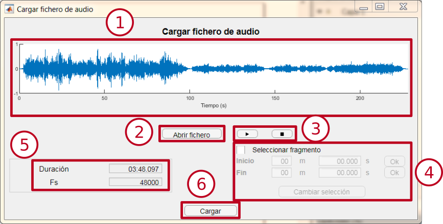

Cargar ficheros de audio
Este módulo permite cargar un fichero de audio para analizarlo.
Interfaz

-
Ventana de previsualización: Permite ver la señal de audio cargada.
-
Botón “Abrir fichero”: Permite seleccionar un fichero de audio para cargarlo.
-
Botones de reproducción: Permiten iniciar o detener la reproducción del fichero de audio. Si hay un fragmento seleccionado, sólo se reproducirá esta parte.
-
Panel de selección de fragmento: Permite seleccionar un fragmento del audio cargado. Para seleccionar el inicio y el final, se deberá escribir el tiempo en el que se situará cada extremo en las cajas habilitadas, o bien haciendo clic sobre la ventana de visualización.
-
Panel de información: Muestra información sobre la duración del fichero y su frecuencia de muestreo.
-
Botón “Cargar”: Abre una nueva ventana de visualización en la que carga el fichero de audio, o bien el fragmento seleccionado.